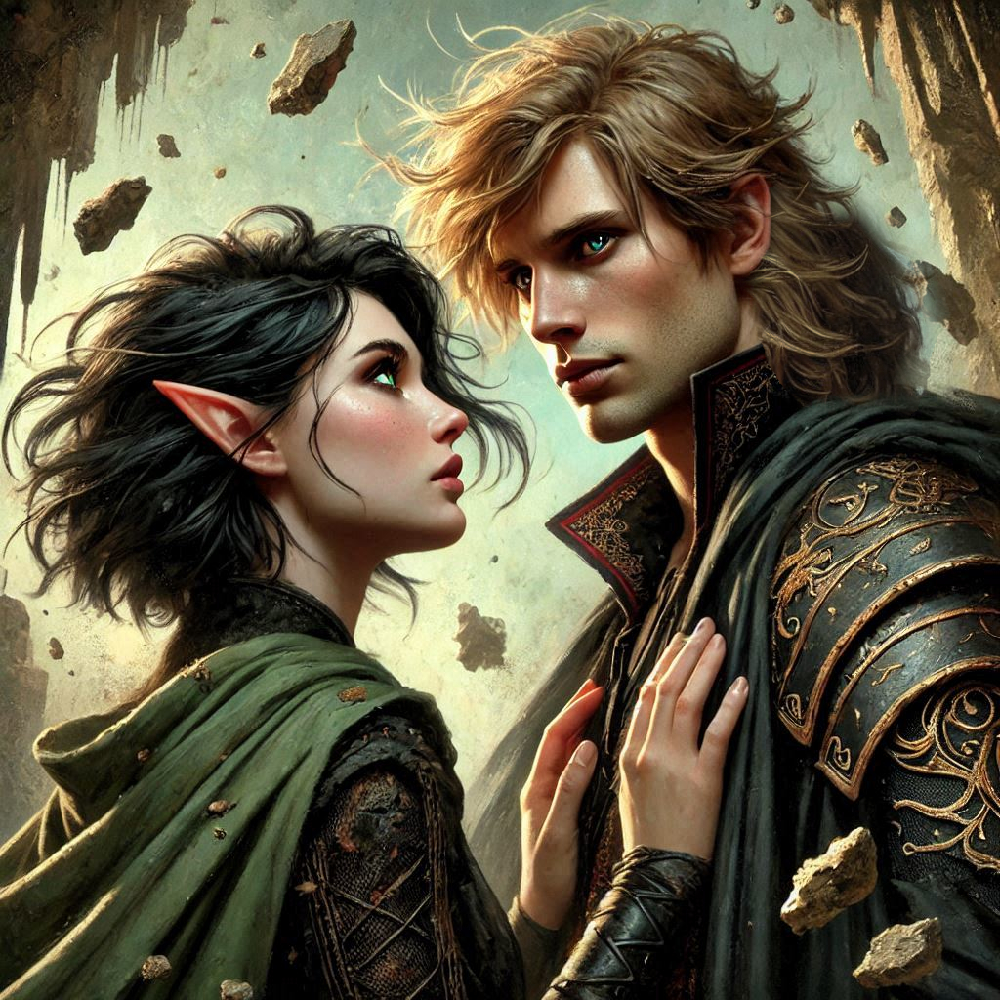
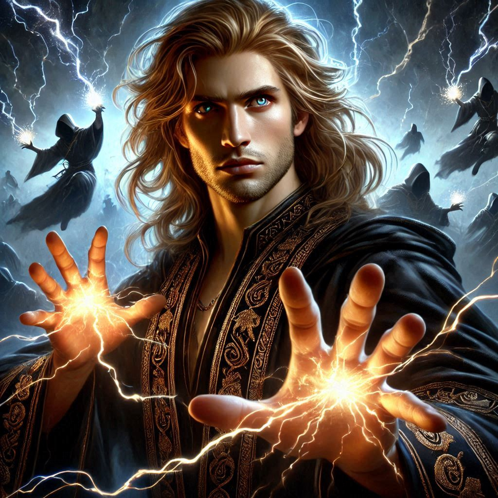
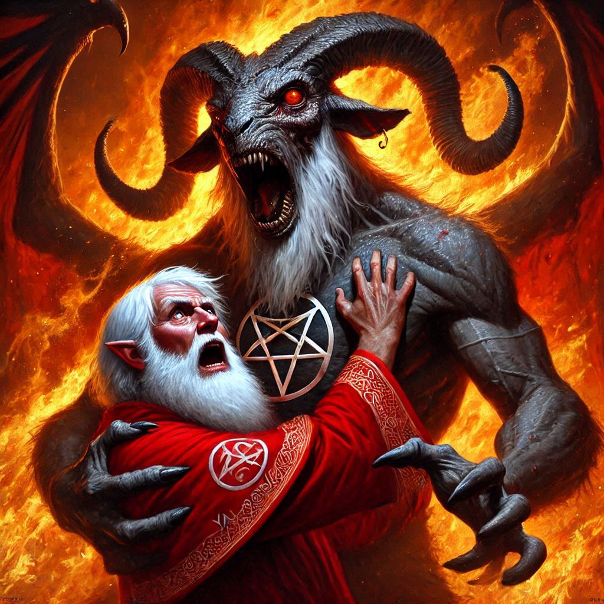
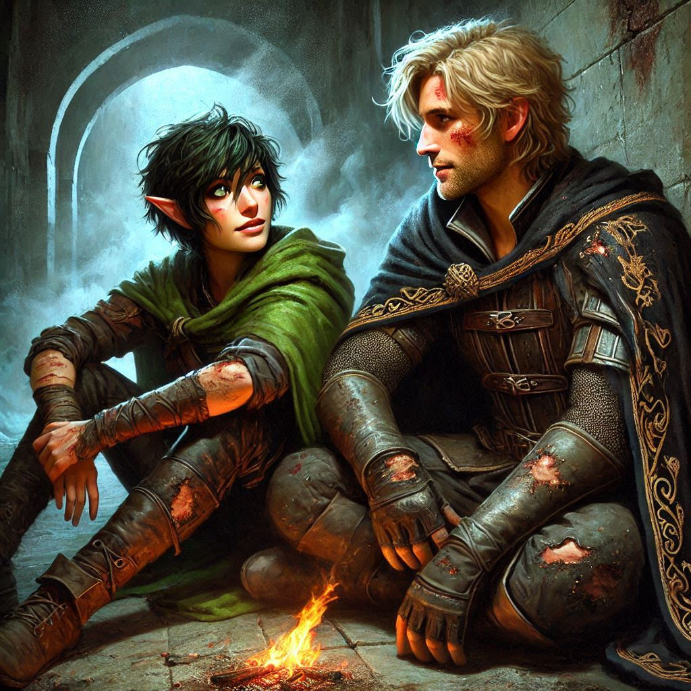

The Power of the Past
You stand at the edge of the collapsing portal, heart pounding as Elias beckons you one last time. You shake your head sadly and wave him away, eager to see him get to safety. You watch as Elias reluctantly disappears into the shimmering veil. The darkness of the Shadow Realm pulses around you, thick with magic and dread. But you don’t move. You can’t. Your feet are rooted to the cold stone floor of the fortress, your thoughts consumed by the man standing just behind you—Jorsh.
You look up in time to see Jorsh send a volley of red energy bolts into the magical shield cast by Varis. The evil dark elf stumbles backward as some of his minions fall beside him, pierced by the magical red arrows flying from Jorsh’s fingertips. You draw an arrow and take aim, but Varis takes cover behind a pillar and retreats down a stairwell into the unknown. Having pushed Varis momentarily back, Jorsh takes cover behind another pillar and looks over at you, sweat pouring down his face.
The decision you’ve avoided for so long has come crashing down on you. The weight of it makes your chest tight, but as you glance over your shoulder at Jorsh, you feel a strange sense of clarity. The boy you once loved is still there, somewhere beneath the layers of anger, the dark magic, and the betrayal. And now, he’s offering you a chance—an impossible choice that calls to the deepest part of you.
“You don’t have to stay,” Jorsh says quietly, his voice softer than it’s been in years. He’s standing near the crumbling archway, eyes dark but open, vulnerable in a way you never expected. “You can still go with Elias.”
But you know it’s too late for that. You’ve already made your choice.
“I’m staying,” you whisper, barely able to believe the words as they leave your lips. The air between you hums with tension, your decision carrying a finality that feels both terrifying and exhilarating.
Jorsh’s eyes widen with surprise, but then, a flicker of something else—hope, perhaps—crosses his face. He closes the distance between you in two quick steps. Before you can speak again, his hands are on your shoulders, and his lips crash against yours in a kiss that makes the world around you fade away. It’s desperate, raw, filled with years of longing and regret. For a moment, there is only Jorsh—the warmth of his touch, the intensity of his kiss, the way he fits so perfectly against you, as though you were always meant to be here, together.
When you pull away, breathless, Jorsh’s forehead rests against yours. “I never stopped loving you, Kira,” he confesses, his voice rough with emotion. “I thought I could keep you out of this. But now—now we can do this together.”
A surge of power flows through you as he speaks, his words igniting a strange warmth in your chest. It spreads through your veins like fire, making you feel stronger, sharper, as though Jorsh is somehow transferring his magic to you. You gasp, gripping his arms as the sensation overwhelms you. The darkness that once felt oppressive now seems like an extension of yourself—something you can control, wield. You feel unstoppable.
Jorsh smiles, sensing your newfound strength. “With this power, we can defeat Varis and ensure that Onyx’s sacrifice is complete. We can stop the dark elves before they breach the kingdom.”
You nod, adrenaline coursing through you as the reality of what you’re about to face sets in. The portal is sealed, but the dungeons below the fortress still hum with malevolent energy. Somewhere deep beneath your feet, Yaldaboath’s minions are waiting, and the final battle looms like a storm on the horizon.
“Let’s finish this,” you say, determination hardening in your chest.
Jorsh takes your hand, and together, you descend the winding stone staircase that leads into the depths of the fortress. The air grows colder, thicker with every step, the shadows around you twisting into grotesque shapes as the presence of Yaldaboath’s evil intensifies. You keep your grip tight on Jorsh’s hand, drawing strength from the bond you’ve rekindled.
The first wave of enemies comes swiftly. As you reach the bottom of the stairs, a squad of dark elves, cloaked in shadow and wielding wicked-looking blades, rushes forward. You barely have time to draw your sword before they’re upon you.
But the darkness is yours now, just as much as theirs.
With a flick of your wrist, you channel the magic Jorsh gave you, feeling it surge through your fingertips. Dark tendrils lash out, wrapping around the nearest elf, pulling him to the ground before he can strike. You move with deadly precision, slashing at another, ducking beneath a flurry of blows. Jorsh is beside you, his magic sizzling through the air, disarming opponents with a flick of his hand.
You and Jorsh fight like a storm, your movements perfectly synchronized. The power of the dark magic flows through you, guiding your every strike. For the first time, you feel truly alive, as though you were always meant to be here, in this moment, fighting alongside him.
The dark elves fall one by one, but you know this is just the beginning.
Once the last elf hits the ground, Jorsh pulls you close, his breath heavy. “We need to keep moving. The deeper we go, the closer we’ll get to Yaldaboath’s lair.”
You nod, though your heart pounds with more than just the rush of battle. Beneath the surface, doubt still lingers, but you push it aside. There’s no room for second-guessing now.
Together, you and Jorsh make your way through the maze of tunnels, cutting through more enemies as you press on. The closer you get to Yaldaboath’s lair, the more the air grows thick with the stench of death and decay.
Finally, you reach a set of massive iron doors, etched with runes that glow faintly in the dim light. The power behind them thrums so heavily, you can feel it in your bones.
“This is it,” Jorsh whispers. His eyes meet yours, and for a moment, you see the boy you once knew—the one who stole your heart all those years ago. “Are you ready?”
You squeeze his hand, your voice steady. “I’m ready.”
Together, you push open the doors and step into the darkness beyond, where the final battle awaits.
To your horror, Varis has opened another portal to the Nine Hells. The evil dark elf prince is clearly attempting to resurrect the mutilated form of the demon Yaldaboath. The Archon Adonais, disguised as Onyx the dwarf, destroyed the demon moments before, leaving Yaldaboath’s stinking body in gruesome dismembered pieces, scattered across the fiery plane of the Nine Hells.
With magic not uttered for hundreds of years, Varis is summoning the ephemeral minions of darkness, shadow spirits swirling over his head like vultures ready to consume the carrion of tortured souls. With the staff of black obsidian, Varis is directing the shadow spirits into the various body parts of Yaldaboath’s corpse. The demon’s hideous legs are growing snakelike tendrils, crawling toward the mutilated hips and pelvis. The intestines of the shredded abdomen slither toward the hips and begin fusing themselves together. You scream and point at Yaldaboath’s head, laying across the chamber. The jagged vertebrae of the demon’s spine sprout root-like fingers, causing the enormous goat head to turn and look at you, its mouth agape in a hideous grin. The eyes glow as the flaming gales of outer darkness begin swirling around you. Varis continues chanting, even as he catches on fire, his red robes burning with unholy flames. The reanimated form of Yaldaboath inhales, sucking Varis toward its enormous head. Varis screams as the demon clutches him and holds him up, examining the evil dark elf like a mischievous child with a novel play thing.
“We have to destroy this monstrosity before it consumes Varis!” Jorsh grabs your hand and squeezes tightly.
“How?” You look at Jorsh desperately. “How do we destroy an undead demon?”
“There is only one magic powerful enough,” Jorsh yells so that you can hear him above the cacophony of the hellfire tempest that swirls all around you. “Love! Kira, you must imagine the most love you’ve ever felt! For me and everyone else!”
You close your eyes, squeezing Jorsh’s hand for reassurance. You feel the hair on your head and your eyebrows burning away. The heat is unbearable, but you force yourself to concentrate. You think of the first time you and Jorsh sat together on your mountain, under the beautiful Vyrethane tree where you first looked deeply into each other’s eyes and confessed your love. The place where your lips first met. The place where you first felt the heat of passion surge through the very core of your being. You think of Elias, your loyal friend, always by your side, bringing criminals to justice. You think of Baider, the gruff half-orc who did his best to raise you as his own. All imperfect relationships, but all making you the complicated and confident person you have become. Your heart swells with appreciation and joy at being a part of each of the lives of these incredible people. You feel a light growing deep in your navel, then your chest, then your throat. Jorsh squeezes your hand and you open your eyes it time to see the hot white energy of your soul and Jorsh’s soul combine between you in a cosmic display of magical ecstasy.
The demon Yaldaboath screams and raises the writhing body of Varis to its mouth. Jorsh chants some ancient words– part elvish, part forgotten tongue– and then thrusts your coupled hands upward. You gasp as a beam of white energy flows from your union and hits Varis, vaporizing him instantly before Yaldaboath can consume him. With Varis’s dark magic obliterated, Yaldaboath stumbles in confusion. Then his body slumps to the ground in massive chunks, burning in the fires of the Nine Hells.
“Run!” Jorsh, still holding your hand, turns and dashes for the portal back to the Shadow Realm.
You sprint beside him and dive through the portal as it collapses, leaving you and Jorsh alone in an antechamber far below the temple of Umbra’Thal.
“We did it,” Jorsh pants.
“Varis and Yaldaboath?” You stare at Jorsh with uncertain hope.
“Gone. Annihilated,” Jorsh says with a smile as he wipes your cheek. “Kira, you’re even beautiful without eyebrows.”
You look at his face, smudged with ashes. “So are you!” Jorsh’s flowing blond locks are singed short, only a few clumps of smoking hair cling to his scalp. “Actually, we look horrible!” You laugh in spite of yourself.
“Easily fixed by magic,” Jorsh says, pulling you in close. His lips meet yours, and you embrace him passionately. For now, you don’t care that you are hairless and covered in burns. The pain is made tolerable by the lost love regained and the knowledge that your sacrifice has saved Belladonna from the evils of Yaldaboath. You are certain that the two of you, together, can overcome any obstacle that crosses your path from here.